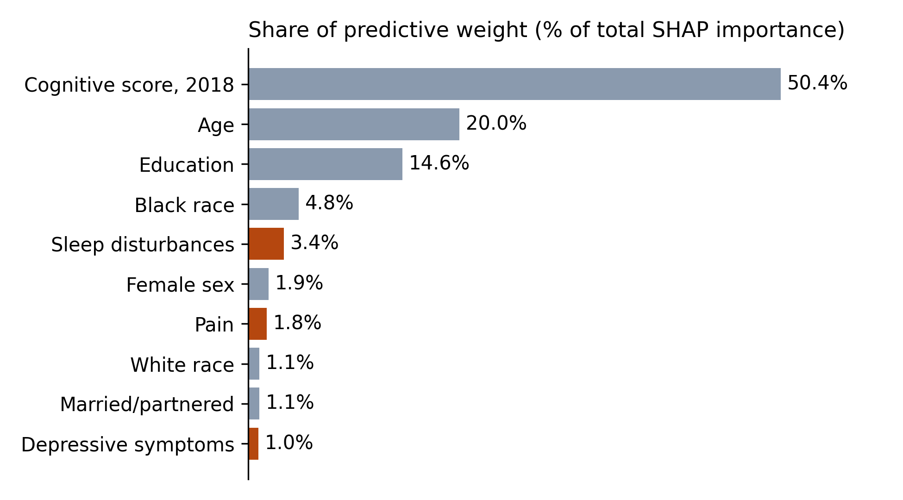

Sleep Disturbances, Pain, and Depressive Symptoms as Predictors of 4-Year Cognitive Scores in Older U.S. Adults: An XGBoost Analysis
Utpol Das, MPH (1); José Eduardo Cabrero-Castro, PhD (2); Sadaf Arefi Milani, PhD, MPH (3)
(1) Division of Palliative Medicine, Department of Internal Medicine, The University of Texas Medical Branch at Galveston, Galveston, Texas
(2) Department of Public Health Sciences, College of Health Sciences, The University of Texas at El Paso, El Paso, Texas
(3) Department of Epidemiology, The University of Texas Medical Branch at Galveston, Galveston, Texas
Download this handout as a PDF
Key finding: frequent trouble falling asleep, waking too early, and moderate-to-severe pain marked lower predicted cognitive scores 4 years later, but sleep, pain, and depressive symptoms together accounted for only 6% of the model's predictive weight. Past cognition, age, and education carried 85% of the predictive weight.
In plain words: we followed 10,166 adults aged 50 and older in the Health and Retirement Study for 4 years. People who had trouble falling asleep or woke too early most of the time, or who had moderate or severe pain, had slightly lower predicted memory and thinking scores 4 years later. But these symptoms, together with depressive symptoms, accounted for only a small share (about 6%) of what drove the model's predictions. A person's earlier score, age, and education mattered far more.
Background
- Depressive symptoms, sleep problems, and pain are common in later life, often occur together, and can be treated.
- Each has been linked to later cognitive decline, but most studies look at one symptom at a time, often as a summary score.
- It is unclear how much these symptoms add to predicting later cognition once past cognition, age, and education are known, and at what symptom level any contribution appears.
Objectives
- Quantify how much depressive symptoms, sleep disturbances, and pain contribute to predicting cognitive scores in 2022.
- Identify which sleep and pain items contribute most.
- Describe the symptom levels at which these contributions arise.
Methods
- Data: Health and Retirement Study, a national panel of U.S. adults older than 50. Predictors were measured in 2018 and the outcome in 2022 (4-year horizon). 10,166 participants had cognitive scores in both waves and complete 2018 data.
- Outcome: Imputed 27-point cognitive score in 2022 (immediate and delayed word recall, serial 7 subtraction, and backward counting). Higher scores mean better performance.
- Symptoms (2018): 8-item CES-D depressive symptom score (0 to 8); four sleep items (trouble falling asleep, waking during the night, waking too early, feeling rested), each rarely or never, sometimes, or most of the time; three pain items (frequent pain, severity, interference with usual activities).
- Other predictors: 2018 cognitive score, age, years of education, sex, race and ethnicity, marital status, and rural residence.
- Model: Extreme gradient boosting (XGBoost) regression, tuned with fivefold cross-validation in a training sample (n = 5,084) and evaluated in a held-out test sample (n = 5,082).
- Explanation: Shapley additive explanation (SHAP) values describe how many points each predictor moved a person's predicted 2022 score compared with the average prediction. Sleep and pain items were also summed into domains. SHAP values describe the model, not cause and effect.
Results
- Mean age was 66.2 years; 60.1% were women, 23.2% non-Hispanic Black, and 16.8% Hispanic.
- Baseline cognition, age, and education accounted for 85.0% of total SHAP importance. Sleep disturbances (3.38%), pain (1.75%), and depressive symptoms (0.95%) together accounted for 6.1%.
- Within symptoms, trouble falling asleep (1.93%), pain severity (1.45%), and waking too early (1.30%) ranked highest; waking during the night (0.34%) contributed little.
- Contributions were near zero or slightly positive at low symptom levels and negative only at the highest levels.
Model performance in the test sample: R-squared 0.447 (44.7% of variance explained); root mean squared error 3.42 points; mean absolute error 2.66 points.

| Rank | Predictor or domain | Mean absolute SHAP, points (95% CI) | Share of total importance |
|---|---|---|---|
| 1 | Cognitive score, 2018 | 1.93 (1.89 to 1.97) | 50.4% |
| 2 | Age | 0.765 (0.748 to 0.783) | 20.0% |
| 3 | Years of education | 0.559 (0.547 to 0.570) | 14.6% |
| 4 | Black race (non-Hispanic) | 0.183 (0.179 to 0.186) | 4.77% |
| 5 | Sleep disturbances (domain) | 0.130 (0.126 to 0.133) | 3.38% |
| 6 | Female sex | 0.0741 (0.0730 to 0.0753) | 1.93% |
| 7 | Pain (domain) | 0.0669 (0.0655 to 0.0684) | 1.75% |
| 8 | White race (non-Hispanic) | 0.0405 (0.0401 to 0.0409) | 1.06% |
| 9 | Married or partnered | 0.0403 (0.0395 to 0.0412) | 1.05% |
| 10 | Depressive symptoms | 0.0364 (0.0358 to 0.0370) | 0.95% |
| Symptom | Lower levels | Highest level(s) |
|---|---|---|
| Trouble falling asleep | Rarely 0.041; sometimes 0.042 | Most of the time −0.254 |
| Waking too early | Rarely 0.044; sometimes −0.002 | Most of the time −0.175 |
| Waking during the night | Rarely 0.009; sometimes 0.004 | Most of the time −0.020 |
| Feeling rested on waking | Most of the time 0.010; sometimes 0.020 | Rarely or never −0.097 |
| Pain severity | None 0.041; mild 0.045 | Moderate −0.064; severe −0.163 |
| Pain interference | None 0.009; low 0.012 | High −0.037 |
| Depressive symptoms (CES-D) | Score 0: 0.024; score 1: 0.031 | Score 2: −0.039; scores 3 to 8: −0.057 to −0.062 |
What it means
- Four-year cognitive predictions depended mainly on baseline cognition, age, and education.
- Frequent difficulty falling asleep or waking too early, moderate or severe pain, and even a few depressive symptoms were associated with lower predicted scores.
- The largest symptom contribution (0.25 points, about 0.055 SD) was far smaller than the average prediction error (3.42 points), so symptoms alone should not be expected to identify future decline.
- These symptoms warrant clinical attention in their own right.
Limitations
- This is a prediction study; SHAP values describe the fitted model and are not causal effects.
- One random training and test split; no baseline-only comparison, calibration, or external validation.
- Complete-case sample of people who took part in both waves; survey weights were not used, so results may not represent all U.S. adults aged 50 and older.
- Symptoms were self-reported once; the CES-D includes a restless-sleep item that overlaps with the sleep items.
References
- Chen, T., & Guestrin, C. (2016). XGBoost: A scalable tree boosting system. Proceedings of the 22nd ACM SIGKDD International Conference on Knowledge Discovery and Data Mining, 785–794. https://doi.org/10.1145/2939672.2939785
- Collins, G. S., et al. (2024). TRIPOD+AI statement: Updated guidance for reporting clinical prediction models that use regression or machine learning methods. BMJ, 385, e078378. https://doi.org/10.1136/bmj-2023-078378
- Huang, Q.-M., et al. (2025). Association between longitudinal trajectories of insomnia symptoms and subsequent cognitive decline: A prospective cohort study. Age and Ageing, 54(7), afaf186. https://doi.org/10.1093/ageing/afaf186
- Ishikawa, K. M., et al. (2025). Regularized regression outperforms trees for predicting cognitive function in the Health and Retirement Study. Machine Learning with Applications, 21, 100694. https://doi.org/10.1016/j.mlwa.2025.100694
- Livingston, G., et al. (2024). Dementia prevention, intervention, and care: 2024 report of the Lancet standing Commission. The Lancet, 404(10452), 572–628. https://doi.org/10.1016/S0140-6736(24)01296-0
- Lundberg, S. M., & Lee, S.-I. (2017). A unified approach to interpreting model predictions. Advances in Neural Information Processing Systems 30.
- Lundberg, S. M., et al. (2020). From local explanations to global understanding with explainable AI for trees. Nature Machine Intelligence, 2(1), 56–67. https://doi.org/10.1038/s42256-019-0138-9
- Sonnega, A., et al. (2014). Cohort profile: The Health and Retirement Study (HRS). International Journal of Epidemiology, 43(2), 576–585. https://doi.org/10.1093/ije/dyu067
- Zaheed, A. B., et al. (2023). Mental and physical health pathways linking insomnia symptoms to cognitive performance 14 years later. Sleep, 46(3), zsac262. https://doi.org/10.1093/sleep/zsac262
Acknowledgments and contact
The Health and Retirement Study is sponsored by the National Institute on Aging (U01AG009740) and conducted by the University of Michigan. HRS data are publicly available to registered users at https://hrs.isr.umich.edu. Thank you to the Delta Nu Chapter of Delta Omega at UTMB for the nomination.
Contact: Utpol Das, MPH, utdas@utmb.edu. ORCID 0009-0001-7672-4473.